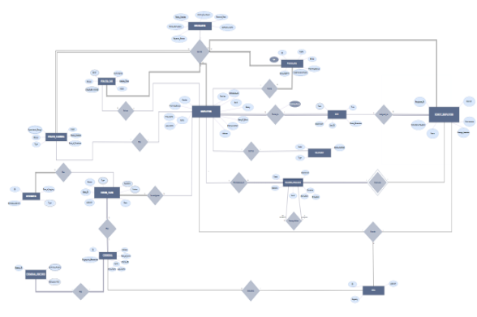

Developed a deep learning model to classify images from the CIFAR-10 dataset, consisting of 60,000 32x32 color images across 10 classes. Leveraged Convolutional Neural Networks (CNNs) to achieve accurate classification performance.
CIFAR-10

RISC Processor
Designing a RISC Processor utilizing the LEGv8 Architecture, this project was driven by the goal of crafting a high-performance processor. By leveraging the intricacies of the LEGv8 Architecture, the resulting processor aimed to achieve exceptional efficiency and performance.
Police Station Database
Using Entity-Relationship (ER) diagrams, relational schemas, and Oracle's database system, this project focuses on designing and optimizing databases. Specialized in enhancing database performance and maintaining data integrity, the project streamlines access for authorized personnel. Proficiency extends to managing Oracle Database Management Systems, ensuring efficient and secure data operations. Through strategic implementation of best practices, the project facilitates seamless database-driven project execution